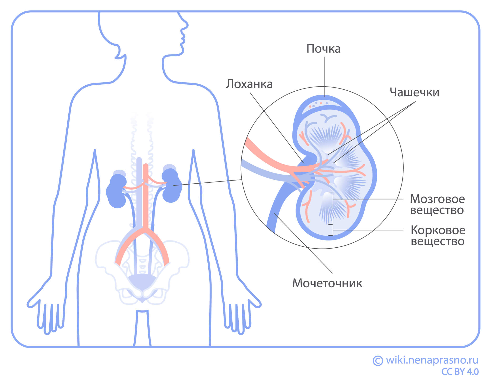
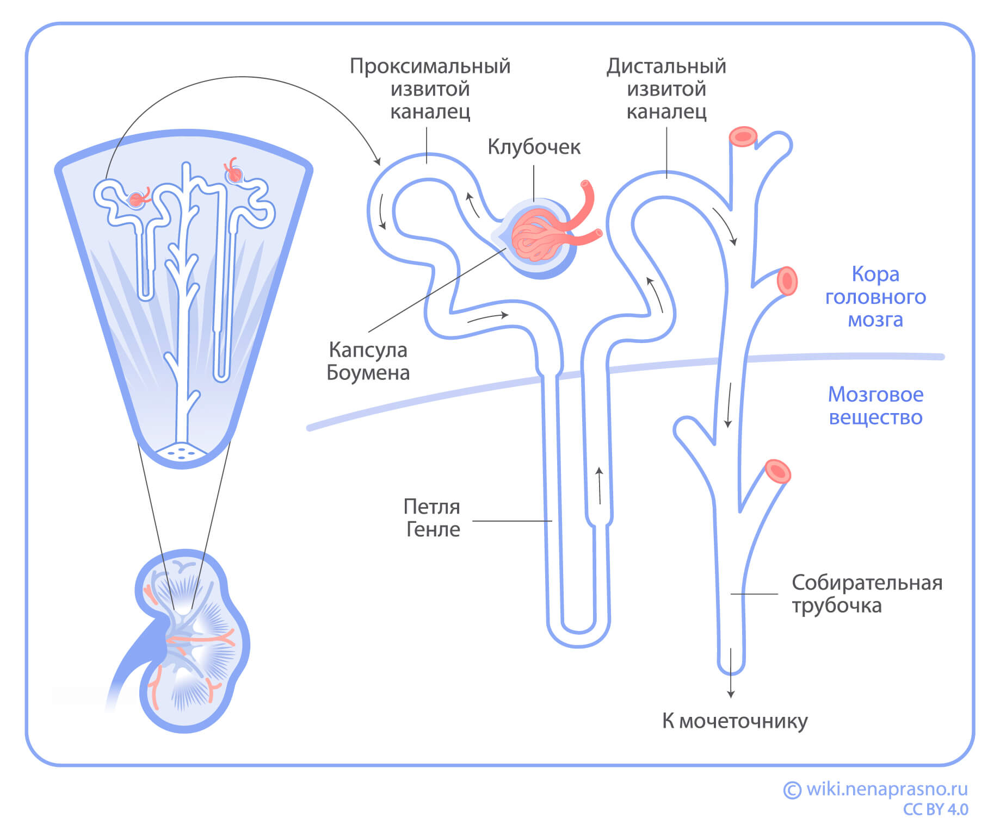
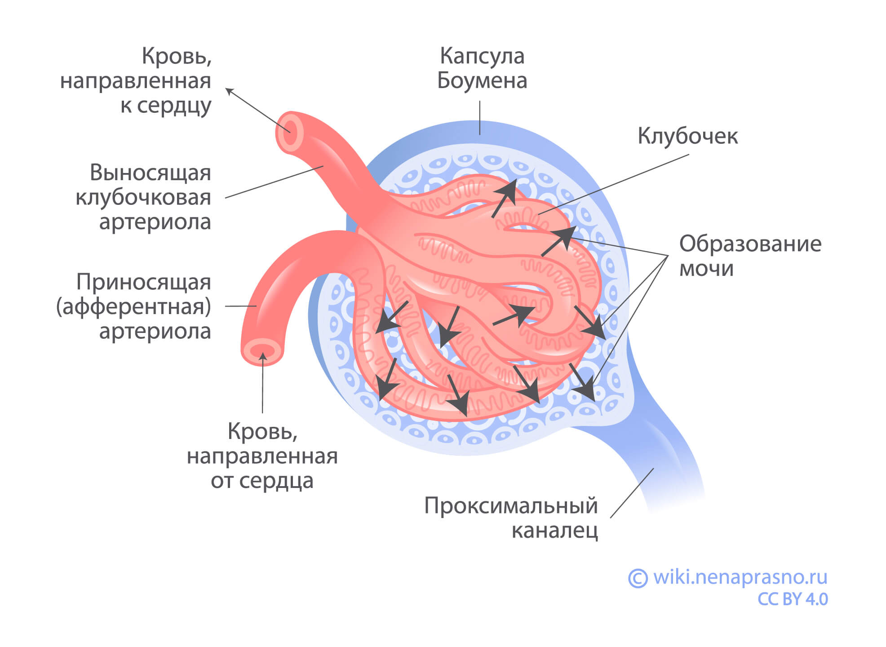

Функции почек
Почки парный орган, расположены они в поясничной области. Основные функции — очищение крови и образование мочи. Также регулируют ряд жизненно важных процессов в организме.
Структура почек
Почка имеет форму боба 10-12 см в длину, 5-7 см в ширину и 2-3 см в толщину. Каждая почка весит примерно 150 грамм. Анатомически состоит из нескольких частей. Основные из них — вещество почки и почечные синусы.
Вещество почки имеет два слоя — корковый и мозговой.
Корковое вещество лежит снаружи под капсулой почки (плотной оболочкой, окружающей каждую почку). Мозговое вещество состоит из 10-14 почечных пирамид, которые широкими основаниями обращены к поверхности органа, а верхушками — в сторону почечного синуса.
На верхушке каждой почечной пирамиды располагается папилла (сосочек). Через него выходит моча, попадая сначала в малые чашечки, затем в большие чашечки, почечную лоханку и мочеточник.
В почечных синусах располагаются кровеносные сосуды, нервы, жировая ткань и почечная лоханка.
Лимфатические узлы и лимфоток почки
Лимфоток почек осуществляется двумя системами. Первая (внутрипочечная) собирает лимфу из ткани почек. Вторая (внешняя) — от капсулы почки. Лимфатические капилляры обеих систем впадают в лимфоузлы ворот почек, а из них лимфа оттекает в регионарные лимфатические узлы. У левой почки они расположены рядом с аортой, у правой — рядом с нижней полой веной. Далее лимфа движется в лимфатический грудной проток, а затем попадает в кровеносное русло.
Функции почек
Основная функция почек — очищение крови и как результат — образование мочи. Почки фильтруют кровь, удаляя из нее (а следовательно, и из организма) продукты обмена веществ, токсины, многие лекарственные препараты, избытки минеральных веществ. В процессе очищения крови участвуют специальные структуры почек — “нефроны”. Когда кровь проходит через нефроны, она фильтруется, и образуется моча.
Почки также участвуют в процессах:
Регулирования кровяного давления — помогают поддерживать оптимальный уровень давления в кровеносной системе, что важно для здоровья сердца и сосудов.
Контроля объема жидкости в организме — способствуют удержанию оптимального количества воды в теле, что важно для поддержания баланса жидкости в клетках и тканях.
Регуляции содержания солей и pH (кислотно-щелочного баланса) — помогают контролировать уровень солей (например, натрия и калия) и кислотности в крови, что также влияет на здоровье и работу органов.
Активации витамина D — в почках происходит образование активной формы витамина D, который нужен для работы организма (например, для поддержания здоровья костей и кожи).
Образовании красных кровяных клеток (эритроцитов) — стимулируют красный костный мозг к выработке эритроцитов, которые переносят кислород ко всем органам и тканям.
Строение и работа нефрона
Нефроны — структурные и рабочие единицы почек. Каждая почка содержит около 1,2 млн нефронов. Основные компоненты нефрона: почечное тельце, система канальцев и собирательных трубочек.
Нефрон начинается с почечного тельца, в которое входят клубочек капилляров и капсула Боумена. Из кровеносных капилляров жидкость фильтруется в капсулу Боумэна, а затем проходит по системе канальцев.
В канальцах нефрона происходит всасывание большей части воды и полезных веществ обратно в кровь, а ненужные организму вещества направляются дальше. Система канальцев оканчивается собирательными трубочками, где завершается формирование концентрированной конечной мочи.
Пройдя по всей длине нефрона за 1-3 минуты, образовавшаяся конечная моча из собирательных трубок попадает в почечные лоханки (через сосочки на верхушках почечных пирамид), а из них по мочеточникам — в мочевой пузырь.
Выводы
Почки — парный орган, его основные функции — очищение крови и образование мочи.
Почки также участвуют в регулировании артериального давления и образовании активных форм витамина Д, стимулируют выработку эритроцитов красным костным мозгом, регулируют объем жидкости и уровень электролитов в крови.
Нефроны — основные функциональные и структурные единицы почек.
Каждая почка состоит из миллионов фильтрующих единиц — нефронов. Через почки ежедневно проходит около 180 литров крови, из которых образуется 1–2 литра мочи.
Нарушения в работе почек могут привести к интоксикации организма, отекам, повышению давления и другим серьёзным последствиям.